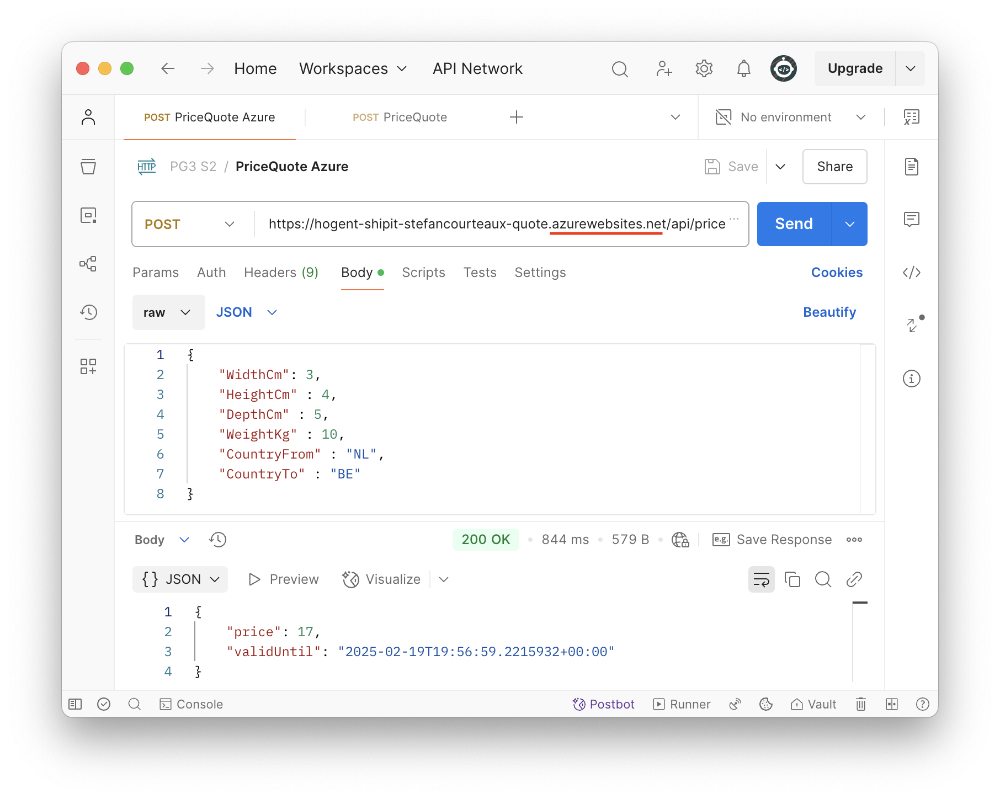

Iteratief Ontwikkelen
Doel van deze les
-
Wat is iteratief ontwikkelen?
-
GitHub leren kennen.
-
Git flow bespreken.
-
Een eerste Story uitwerken.
Iteratief Ontwikkelen
Bij traditionele softwareontwikkeling schrijven analisten een enkel groot specificatiedocument. Dit wordt overhandigd aan het ontwikkelteam en x maand later wordt de software opgeleverd. Dit kan goed werken onder bepaalde omstandigheden, maar veelal moet men bij oplevering toch concluderen dat een en ander over het hoofd gezien werd tijdens de analyse. Deze manier van werken wordt het waterfall model genoemd.
Wanneer iedereen akkoord is dat er een mate van onzekerheid bestaat rond de specificaties, werkt het beter om in kleine stapjes te ontwikkelen en veel feedbackmomenten met de klant te organiseren. Wanneer je bijvoorbeeld elke twee weken een nieuwe versie oplevert en de resultaten bespreekt met de klant, is de kans groot dat je project na zes maand dichter aanleunt bij de werkelijke wensen en noden, dan wanneer je zes maand niet gesproken hebt met elkaar. Dit wil niet zeggen dat het project sneller klaar zal zijn of goedkoper zal zijn.
Er zijn vele manieren om softwareontwikkeling op flexibele, iteratieve manier te organiseren. Er werden al vele boeken over geschreven en een niet te onderschatten aantal mensen en bedrijven slaan geld uit het prediken en coachen van een bepaalde aanpak. Ook hier geldt dat het bedrijf waar je terecht komt, zal bepalen hoe er gewerkt wordt.
Een populaire iteratieve aanpak is SCRUM.
Het is niet haalbaar om tijdens deze lessen dieper in te gaan op deze technieken. We houden wel rekening met de meest cruciale concepten. We proberen functionele requirements uit te werken op basis van een story.

We houden ook rekening met een Definition Of Ready for development (DOR), Definition Of Done (DOD) en Tech Debt.
GitHub
In dit vak gebruiken we Microsoft GitHub om de ontwikkeling van software te plannen en op te volgen.
Intussen biedt GitHub de meeste functionaliteit die Azure DevOps biedt. Azure DevOps wordt op dit moment nog veel gebruikt in bedrijven met een iets conservatievere aanpak. Men kan vermoeden dat deze producten niet voor altijd samen zullen blijven bestaan. Je gebruikt Azure DevOps in Projectwerk 2.
Git
Git is een open source versiebeheersysteem. Dit systeem vormt de kern van de meeste moderne broncode versiebeheersproducten zoals GitHub, BitBucket, en Azure DevOps Code Repositories. Git is dus geen afkorting voor GitHub, wel het systeem achter verschillende vergelijkbare diensten.
Een repository omvat alles wat je in het versiebeheersysteem onderbrengt.
Er zal minstens 1 branch bestaan. Deze heet gewoonlijk main, master of trunk. Van die branch kan je zelf branchen (een nieuwe aftakking maken) om jouw werk in te doen.
Een set van wijzigingen lokaal vastleggen doe je door te committen. Een commit is steeds vergezeld van een duidelijke commit message.
Jouw branch, inclusief commits, naar de repository op de server sturen heet pushen. Wijzigingen op een branch van de server halen, heet pullen. Pullen en dan pushen noemen we syncen.
Wanneer je de wijzigingen op jouw branch wil doorvoeren op een andere branch, gaan we deze mergen.
Mergen wordt idealiter gedaan aan de hand van pull requests. Deze geven één of meer collega’s de kans om jouw code te bekijken en hun opmerkingen te geven voordat de wijzigingen finaal doorgevoerd wordt.
Er bestaan verschillende standaard branching strategies. Je kan er ook zelf verzinnen. Afhankelijk van het bedrijf waar je terechtkomt, zal dit anders verlopen. Enkele opties zijn
De lessen zullen scaled trunk based development hanteren.

Er bestaan verschillende tools om een git repository op je computer te beheren.
-
Git CLI
-
IDE/Plugins zoals VS Code, Visual Studio, Rider,…
-
Dedicated applicaties zoals Sourcetree
Ze kennen elk hun eigen voor- en nadelen, maar werken over het algemeen naadloos samen gezien ze in de achtergrond dezelfde git commando’s uitvoeren.
Story - Prijs Berekenen
GitHub Workflow
Maak een nieuw Project in GitHub.
Opteer voor het type Kanban. Dit is een vereenvoudigd bord zonder expliciete sprints, die een aantal categorieën voorziet om taken op te volgen.
Voeg een nieuwe taak toe (Add item) aan de Backlog. Gebruik de story als titel en voeg alle relevante informatie toe.

Wanneer een taak Ready (for development) is, sleep je deze naar de Ready kolom. Wanneer je aan een taak wil werken, sleep je deze naar de In Progress kolom.
Maak een nieuwe branch (op basis van main) waarin je aan de taak zal werken. Op deze manier zal de branch, de commits en de pull request aan de taak, en dus veel context, verbonden blijven.
Controleer het repository en de source branch. Vaak worden branches voor stories onder feature/ in de hiërarchie gezet. Kies een logische naam voor de branch. Gebruik niet meer dan een handvol woorden.
Eenmaal de branch bestaat, kan je deze lokaal ophalen. Voor een git fetch uit.
Nu zal de branch verschijnen in de keuzelijst
Je gebruikt uiteraard een tool naar keuze, of gewoon de CLI.
git fetch origin git checkout feature/price-calc
Implementatie
Solution Opzetten
Zet een solution op met een web project voor de api en een class library voor de contracten (~api dto’s).
Build en run de web api.
Test met een browser.
Aandachtspunten Code
| De story werd tijdens de les stapsgewijs geïmplementeerd. Deze samenvatting beperkt zich tot de aandachtspunten van het eindresultaat. |
| De lessen Programmeren Gevorderd 2 bespreken in meer detail hoe een Api opgebouwd wordt. |
using System.Text.Json.Serialization; (1)
using ShipIt.PriceQuote.Api.Services;
namespace ShipIt.PriceQuote.Api
{
public class Program
{
public static void Main(string[] args)
{
var builder = WebApplication.CreateBuilder(args);
builder.Services.AddControllers().AddJsonOptions(opt => {
opt.JsonSerializerOptions.Converters.Add(
new JsonStringEnumConverter()); (2)
});
;
builder.Services.AddScoped<IPriceQuoteService, PriceQuoteService>();
var app = builder.Build();
app.MapControllers(); (3)
if (app.Environment.IsDevelopment()) (4)
app.UseExceptionHandler("/error-development");
else
app.UseExceptionHandler("/error");
app.Run();
}
}
}| 1 | System.Text.Json, er is hier geen reden om het historisch populaire Newtonsoft te gebruiken. |
| 2 | Enumerations zullen naar buiten toe geserialiseerd worden als string - niet als int. |
| 3 | Verken en map de routes gedefinieerd in api controllers. |
| 4 | Exceptions worden afgevangen en verwerkt door ErrorsController. |
using Microsoft.AspNetCore.Mvc;
using ShipIt.PriceQuote.Api.Contracts;
namespace ShipIt.PriceQuote.Api.Controllers
{
[Route("api/[controller]")] (1)
[ApiController] (2)
public class PriceQuotesController : ControllerBase
{
[HttpPost]
public ActionResult<PriceQuoteResponseContract> CreatePriceQuote(
PriceQuoteRequestContract priceQuoteRequest) {
...| 1 | De route api/pricequotes wordt dynamisch bepaald op basis van de controllernaam. |
| 2 | [ApiController] activeert de modelbinding en dus validatie. Validatiefouten resulteren daardoor automatisch in ProblemDetails. |
public class ErrorController : ControllerBase
{
[Route("/error-development")]
public IActionResult HandleErrorDevelopment([FromServices] IHostEnvironment hostEnvironment)
{
if (!hostEnvironment.IsDevelopment())
{
return NotFound(); (1)
}
var exceptionHandlerFeature = HttpContext.Features.Get<IExceptionHandlerFeature>()!;
return Problem(
detail: exceptionHandlerFeature.Error.StackTrace,
title: exceptionHandlerFeature.Error.Message
); (2)
}
[Route("/error")]
public IActionResult HandleError()
{
var exceptionHandlerFeature = HttpContext.Features.Get<IExceptionHandlerFeature>()!;
return Problem(title: exceptionHandlerFeature.Error.Message); (3)
}
}| 1 | De route error-development proberen bezoeken in een release HostingEnvironment resulteert in een NotFound. |
| 2 | De exception wordt omgezet in een ProblemDetails met StackTrace. |
| 3 | De exception wordt omgezet in een ProblemDetails zonder StackTrace. |
Versiebeheer
Weer ongewenste bestanden uit het git repository. Je kan expliciet elk bestand oplijsten, maar wildcards kunnen handig zijn. Voeg zelf de relevante files toe. Dit kan sterk verschillen per OS/IDE/…
**/.DS_Store **/.vs/ **/.rider/ **/obj/ **/bin/ src/ShipIt.PriceQuote.Api/appsettings.Development.json
Push je aangepaste branch naar GitHub.
Controleer aanwezigheid van jouw commit op de branch in GitHub en maak een Pull Request.
Dit is het moment dat jij en jouw collega’s de aanpassing gaan valideren. Merge het PR wanneer alles er goed uit ziet.
De aanpassingen zouden nu op main beschikbaar moeten zijn.
Deployment
az webapp up --sku F1 --name hogent-shipit-<voornaam><naam>-quote --os-type linux{
"URL": "http://hogent-shipit-stefancourteaux-quote.azurewebsites.net",
"appserviceplan": "stefan.courteaux_asp_6085",
"location": "canadacentral",
"name": "hogent-shipit-stefancourteaux-quote",
"os": "Linux",
"resourcegroup": "stefan.courteaux_rg_8123",
"runtime_version": "dotnetcore|8.0",
"runtime_version_detected": "8.0",
"sku": "FREE",
"src_path": "//Users//stefancourteaux//Source//PG3//Les02//ShipIt2425S2//ShipIt//ShipIt.PriceQuote.Api"
}
Azure Deployment & Resources
Opruimen
Tot op heden hebben we zeer kort door de bocht gedeployed naar Azure. Deze manier van deployen is handig, maar doet veel impliciet werk dat na herhaalde deployments ongewenste resources achterlaat in Azure. We kunnen dit beter doen door expliciet te zijn en resources te hergebruiken.
Indien er nog resources bestaan, wissen we deze eerst via de Azure Portal. De handigste manier om te zien wat er bestaat, is te vertrekken vanuit Resource Groups.
Wis al de resources die aangemaakt werden tijdens vorige deployment pogingen.
Hiërarchie
Nu kunnen we stap voor stap de nodige resources aanmaken en expliciet benoemen.
| Je kan PowerShell commands splitsen over meerdere lijnen door een backtick te gebruiken. Dit is geen magic, backtick is gewoon het escape character. De newline zal dus genegeerd worden. Gebruik backslash in Linux/MacOS style terminal. |
az group create ` (1)
--name hogent-pg3-stefanc-shipit ` (2)
--location westeurope (3)| 1 | Lukt het allemaal niet, zet het commande dan op één lijn. |
| 2 | Kies een naam die duidelijk en logisch voelt. |
| 3 | We deployen naar Azure in Europa. Gebruik een regio die beschikbaar is op jouw Azure subscription. |
az appservice plan create `
--name hogent-pg3-stefanc-shipit-plan ` (1)
--resource-group hogent-pg3-stefanc-shipit ` (2)
--is-linux `
--sku F1| 1 | Kies een naam die duidelijk en logisch voelt. |
| 2 | De naam die je gekozen hebt in de eerste stap. |
az webapp up `
--name hogent-pg3-stefanc-shipit-quote ` (1)
--resource-group hogent-pg3-stefanc-shipit ` (2)
--plan hogent-pg3-stefanc-shipit-plan ` (3)
--os-type linux| 1 | Kies een naam die duidelijk en logisch voelt. |
| 2 | De naam die je gekozen hebt in de eerste stap. |
| 3 | De naam die je gekozen hebt in de vorige stap. |
We kunnen een nieuwe versie van de app deployen door bovenstaand commando opnieuw uit te voeren. Op deze manier worden er niet elke keer bijkomende resources aangemaakt.
Korte Versie
Nu we de hiërarchie begrijpen, is het interessant om weten dat we dit allemaal in een enkel statement kunnen inrichten. We moeten er gewoon op letten telkens exact hetzelfde statement uit te voeren om een bepaalde service te deployen.
az webapp up `
--name hogent-pg3-stefanc-shipit-quote `
--plan hogent-pg3-stefanc-shipit-plan `
--resource-group hogent-pg3-stefanc-shipit `
--location westeurope `
--os-type linuxOpdracht
Maak zelf een GitHub repo, board etc voor jouw oefeningen. Maak een aparte repo voor jouw eigen project. Geef de lesgever toegang tot het repo indien je feedback wil kunnen vragen.
Oefening
Probeer zelf de taak van de week te implementeren. Je kan steeds kijken naar de code uit de les als je vast loopt.